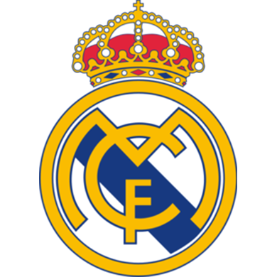
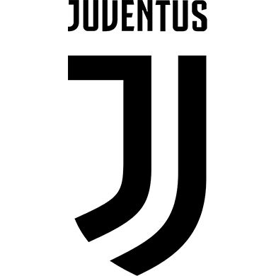
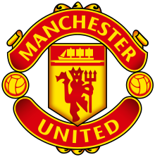

Футбол. Великие...
Все о великих клубах, стадионах, игроках
Великие клубы
 «Барсело́на» (кат. Futbol Club Barcelona, исп. Fútbol Club Barcelona), известен также как
«Ба́рса» (исп. и кат. Barça) — каталонский профессиональный футбольный клуб из
одноимённого города, один из самых титулованных клубов в Испании и в мире. Основан в 1899
году группой швейцарских, британских, испанских и каталонских футболистов во главе с
Жоаном Гампером. Клуб стал одним из символов Каталонии, отсюда происходит и девиз — Més
que un club — «Больше, чем клуб». Поклонники ФК «Барселона» также известны как «culés»
(кулес).
Подробнее
«Барсело́на» (кат. Futbol Club Barcelona, исп. Fútbol Club Barcelona), известен также как
«Ба́рса» (исп. и кат. Barça) — каталонский профессиональный футбольный клуб из
одноимённого города, один из самых титулованных клубов в Испании и в мире. Основан в 1899
году группой швейцарских, британских, испанских и каталонских футболистов во главе с
Жоаном Гампером. Клуб стал одним из символов Каталонии, отсюда происходит и девиз — Més
que un club — «Больше, чем клуб». Поклонники ФК «Барселона» также известны как «culés»
(кулес).
Подробнее

«Реа́л Мадри́д» (исп. Real Madrid Club de Fútbol) — испанский профессиональный футбольный
клуб из города Мадрида. Признан ФИФА лучшим футбольным клубом XX века. «Реал Мадрид» —
один из трёх клубов, которые ни разу не покидали высший испанский дивизион, двумя другими
являются «Барселона» и «Атлетик Бильбао». Является одним из самых титулованных клубов
в испанском футболе. На его счету 62 национальных титула: рекордные 33 титула чемпиона Ла
Лиги, 19 Кубков Испании и 10 Суперкубков Испании. Является рекордсменом по количеству
побед и голов в Лиге чемпионов (13 раз).
Подробнее
 «Бава́рия» Мюнхен (нем. FC Bayern München; немецкое произношение: [ʔɛf tseː ˈbaɪɐn ˈmʏnçn̩]) —
профессиональный немецкий футбольный клуб из города Мюнхен. Основан в 1900 году. Самый титулованный клуб
Германии и один из самых титулованных клубов мира. Бавария» заняла 3 место в списке лучших футбольных
клубов XX века по версии ФИФА, 4 место — по версии журнала Kicker. «Бавария» является самым титулованным
профессиональным футбольным клубом в Германии, на её счету 28 чемпионских титулов и 19 Кубков Германии, 3
победы в Кубке европейских чемпионов и 2 — в Лиге чемпионов.
Подробнее
«Бава́рия» Мюнхен (нем. FC Bayern München; немецкое произношение: [ʔɛf tseː ˈbaɪɐn ˈmʏnçn̩]) —
профессиональный немецкий футбольный клуб из города Мюнхен. Основан в 1900 году. Самый титулованный клуб
Германии и один из самых титулованных клубов мира. Бавария» заняла 3 место в списке лучших футбольных
клубов XX века по версии ФИФА, 4 место — по версии журнала Kicker. «Бавария» является самым титулованным
профессиональным футбольным клубом в Германии, на её счету 28 чемпионских титулов и 19 Кубков Германии, 3
победы в Кубке европейских чемпионов и 2 — в Лиге чемпионов.
Подробнее

«Юве́нтус» (итал. Juventus Football Club [ju.ˈvɛn.tus]; от лат. iuventus — юность) — итальянский
профессиональный футбольный клуб из Турина, один из самых старых, титулованных и сильнейших клубов Италии,
Европы и мира. Основан в 1897 году как «Спорт-клуб Ювентус» группой учащихся средней школы Турина,
является третьим старейшим итальянским клубом и одним из 2 клубов из Турина в Серии А. С 1920-х годов
клубом владеет семья Аньелли. «Ювентус» является самым титулованным клубом в Италии. В 1988 году клуб
получил награду УЕФА за победы во всех турнирах, проводимых федерацией.
Подробнее

«Манче́стер Юна́йтед» (англ. Manchester United Football Club; английское произношение:
[ˈmæntʃɛstər ju:ˈnaɪtɪd]) — английский профессиональный футбольный клуб из Стретфорда, Большой Манчестер.
Был основан в 1878 году под названием «Ньютон Хит (Ланкашир энд Йоркшир Рейлуэй)», в 1902 году изменил
название на «Манчестер Юнайтед». Один из самых популярных футбольных клубов в мире. Один из основателей
английской Премьер-лиги в 1992 году. «Манчестер Юнайтед» является одним из самых успешных английских клубов
по количеству выигранных титулов за всю историю.
Подробнее